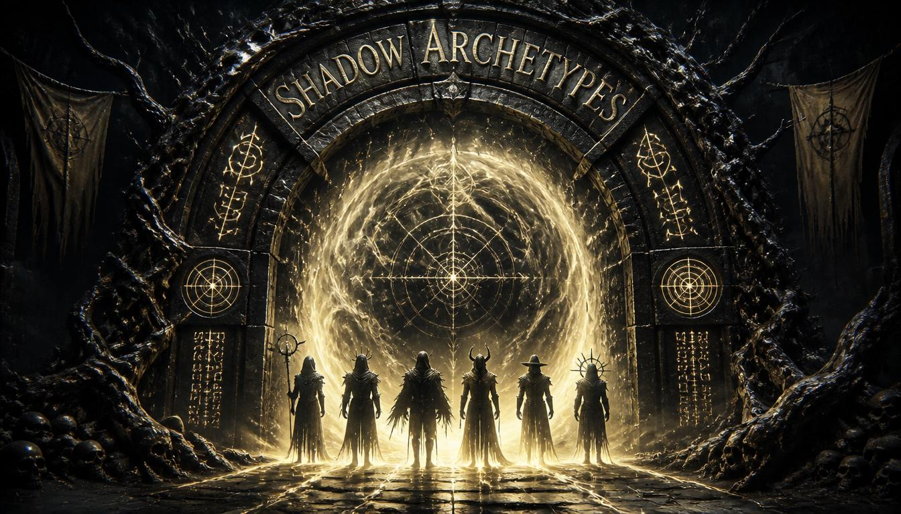
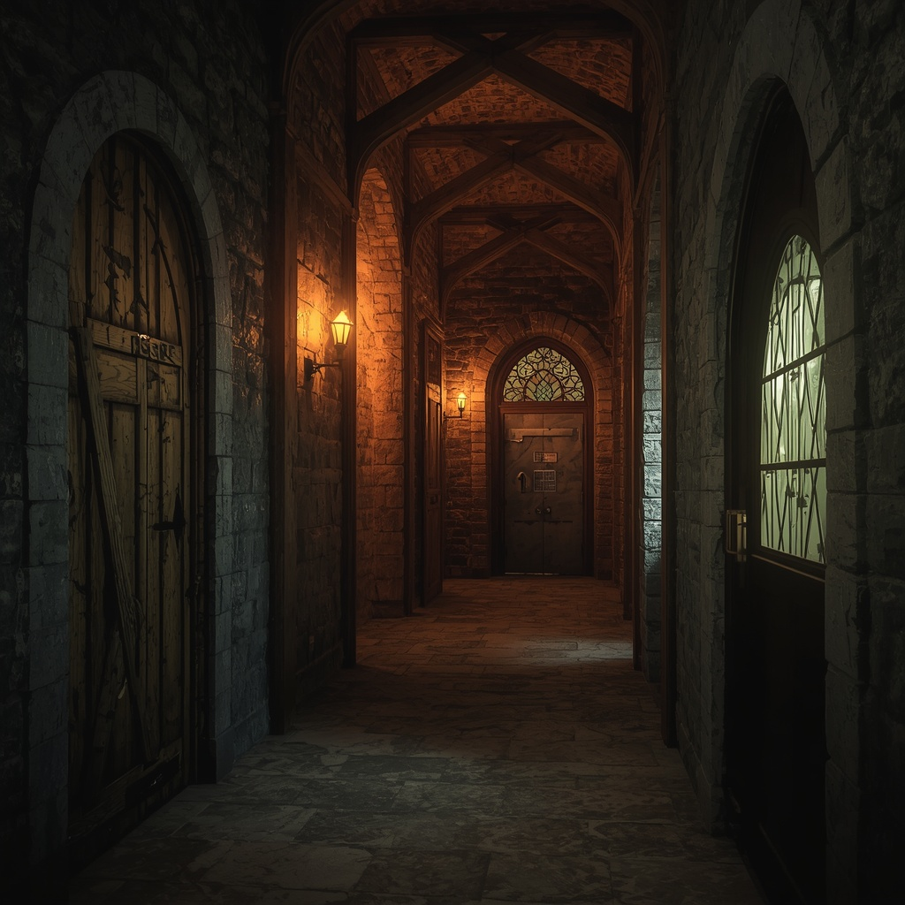
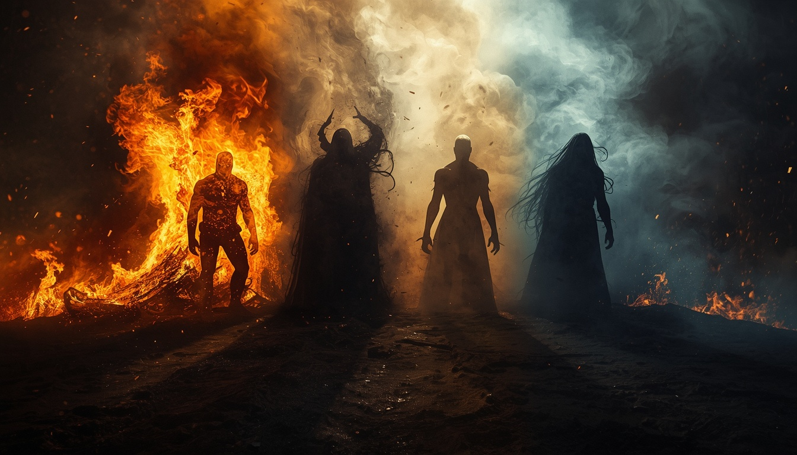
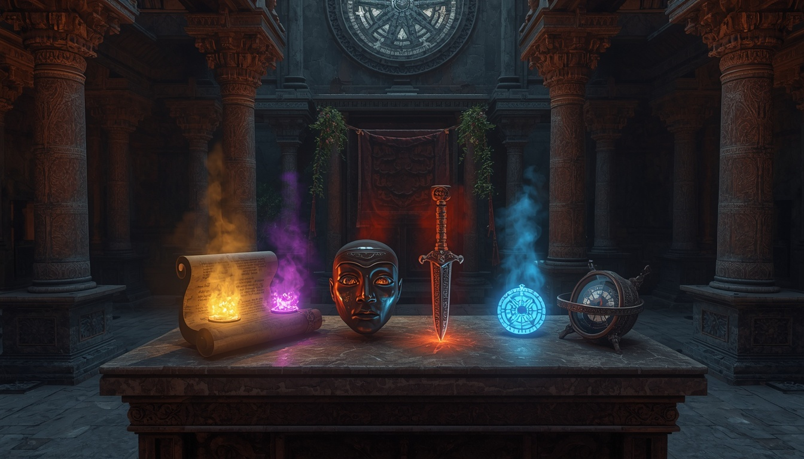
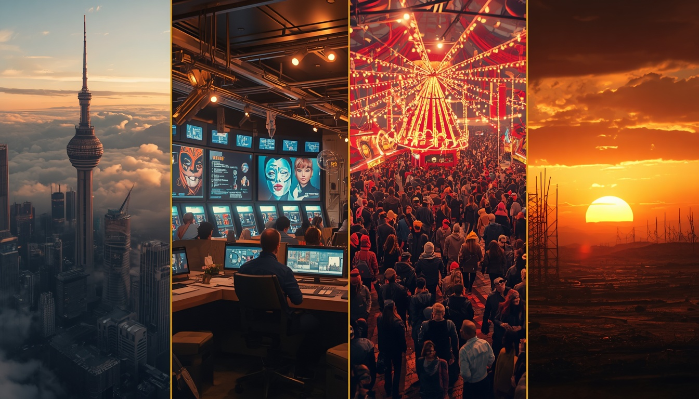
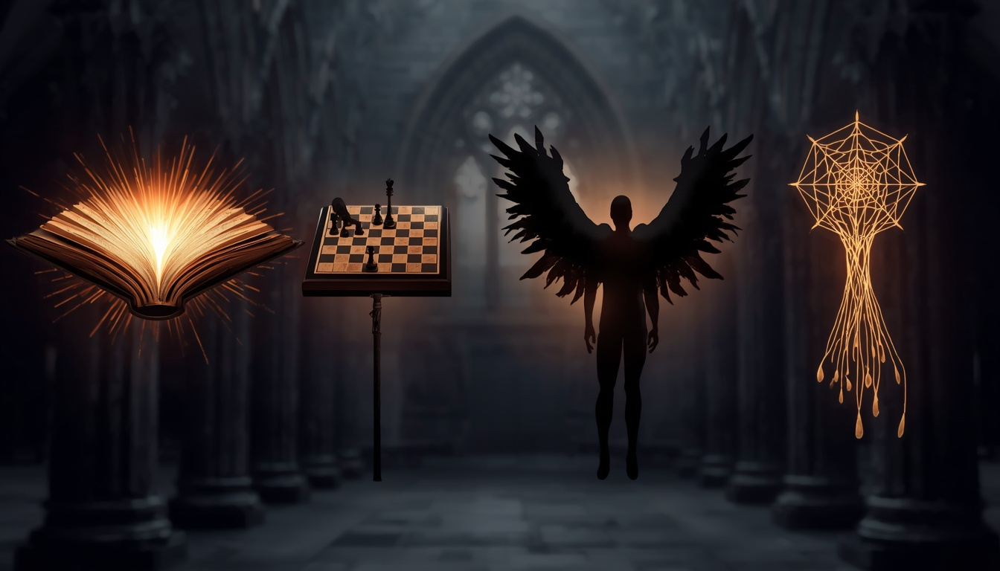
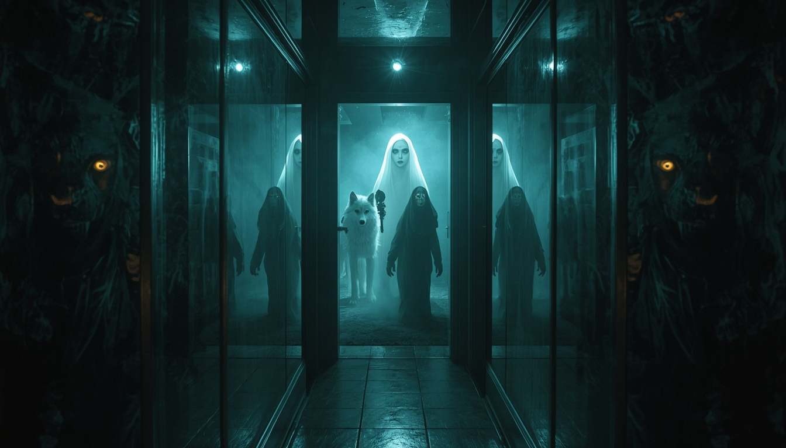
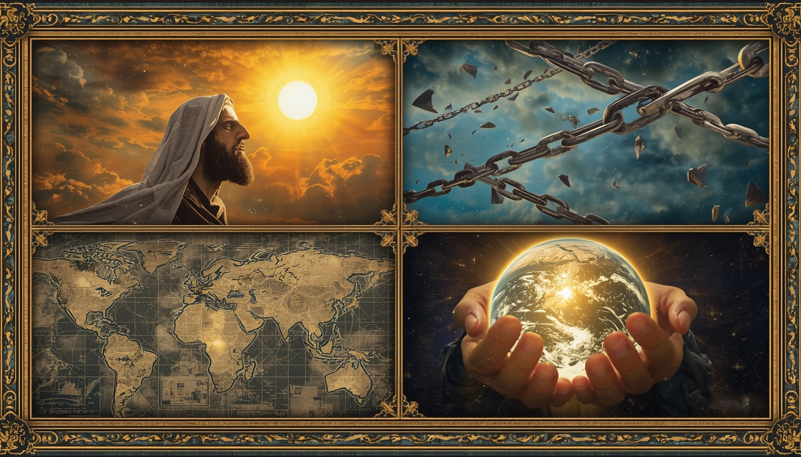
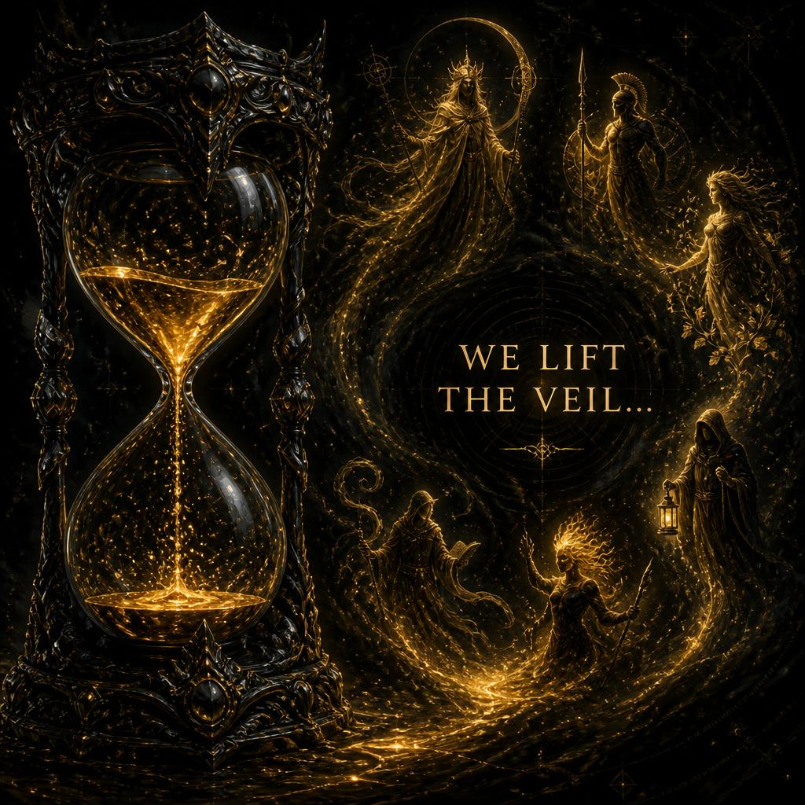

Тени сгущаются…
В каждом из нас дремлет первородная сила — Теневой Архетип. Ответь на 7 вопросов, и мы покажем, кто скрывается под твоей маской.

Дверь в неизвестность
Ты стоишь перед порталом. Выбери дверь, в которую войдёшь без страха.

Сила стихии
Твоя внутренняя ярость похожа на…

Сокровище
В заброшенном храме ты находишь артефакт. Что это?

Убежище
Где ты чувствуешь абсолютную, непробиваемую безопасность?

Оружие
Твоё идеальное оружие — это…

Тень
Посмотри в угол комнаты. Что шевелится в темноте?

Жертва
Ради чего ты готов пожертвовать всем?

⏳ Тени сгущаются… Мы снимаем покров…
Сейчас будет показано короткое видео, чтобы открыть результат.

Полный разбор архетипа